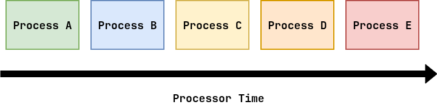
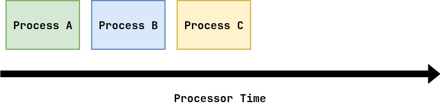
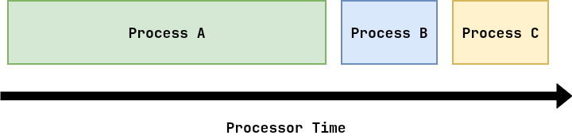
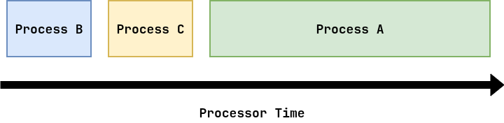
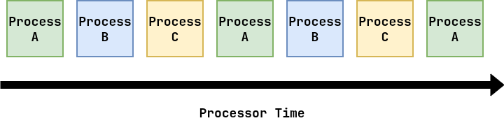

Review¶
The purpose of Project 01 is to create shell that executes and manages processes.
-
Two Queues:
- Running: processes are given CPU time.
- Waiting: processes are not given CPU time.
Demonstrate scheduler in action with video
Scheduling: Questions¶
-
What is the purpose of a scheduler?
-
When does a scheduler execute?
-
What are some common scheduling policies?
-
How do we evaluate a scheduling policy?
Scheduling: Purpose¶
What is the purpose of a scheduler?
-
The scheduler determines which process runs next.
-
The decision making process is called a scheduling policy (discipline).
For Project 01: Need to consider multi-core!
OS kernel wants to maximize resource utilization.
Process: Life Cycle (Review)¶

System Calls:
fork: allocate child process.exec: reset address space and execution context.exit: terminate and tell parent exit status.wait: retrieve child exit status and deallocate child process.
Project 01:
Reading 03:
- Explain
pid = wait(&status)andWEXITSTATUS(status).
Process: States (Review)¶

-
Review: Cooperative vs Pre-emptive multitasking.
-
Project 01: Implement timer interrupt with interval timer and signal hanlder.
Process: Context Switch (Review)¶

Scheduling: Overview¶
When does a
scheduler execute?Whenever we need to decide which process to run next, we invoke the scheduler:
-
A process terminates
-
A process blocks
-
A timer interrupt (preemptive multitasking)
Happens very frequently!
Scheduling: Workload¶
To make scheduling policies, we need to consider our workload, or collection of processes running on our system.
Let's start with the following assumptions:
-
Each job runs for the same amount of time.
-
All jobs arrive at the same time.
-
Once started, each job runs to completion.
-
All jobs only use the CPU (no I/O).
-
The run-time of each job is known.
As we explore different scheduling policies, we will need to address these assumptions and eventually relax or drop them.
Scheduling: Metrics¶
To compare different scheduling policies, we need to consider different metrics:
Turnaround Time (Throughput, Volume)¶
Tturnaround = Tcompletion - Tarrival
How soon does the job complete?
Scheduling: Video¶
FIFO: Overview¶
A basic scheduling policy is First In, First Out (FIFO):

Execute the jobs in the order in which they arrive.
FIFO: Algorithm¶
# This assumes that the Schedule has two queues: # .running This is a list of running processes # .waiting This is a list of processes ready to run def ScheduleFIFO(s: Scheduler): # As long as we have less running processes than we have # CPUs and there waiting processes, then transfer a process # from the waiting queue to the running queue while s.running.size() < NCPUS and s.waiting.size(): process = s.waiting.pop() StartProcess(process) # TODO: Error handling s.running.push(process)Project 01
-
Make sure you do error checking!
-
scheduler_addputs process inwaitingqueue. -
Call
scheduler_nextifs->eventisEVENT_TIMER.
FIFO: Example 1¶
Jobs A, B, and C arrive at time
0and run for5seconds each:
Average Turnaround Time¶
(5 + 10 + 15) / 3 = 10 s/job
Average Response Time¶
(0 + 5 + 10) / 3 = 5 s/job
FIFO: Example 2¶
If we relax Assumption 1, we see that FIFO is susceptible to the
Convoy Effect, where a large job bottlenecks many smaller jobs.Job A arrives at time
0and runs for30seconds, while B and C also arrive at time0but run for5seconds:
Average Turnaround Time¶
(30 + 35 + 40) / 3 = 35 s/job
Average Response Time¶
(0 + 30 + 35) / 3 ~ 22 s/job
FIFO: Example 3¶
One way to combat the Convoy Effect, is to rank our FIFO such that we always select the shortest job first (SJF) (use priority queue).

Average Turnaround Time¶
(5 + 10 + 40) / 3 ~ 18 s/job
Average Response Time¶
(0 + 5 + 10) / 3 = 5 s/job
FIFO: Example 4¶
If we relax Assumption 2, we see that FIFO with SJF is
still susceptible to the Convoy Effect.Job A arrives at time
0and runs for30seconds, while B and C also arrive at time5but run for5seconds:Average Turnaround Time¶
(30 + (35-5) + (40-5)) / 3 ~ 31 s/job
Average Response Time¶
(0 + (30-5) + (35-5)) / 3 ~ 18 s/job
FIFO: Summary¶
-
FIFO is relatively straightforward.
-
FIFO generally has good turnaround time.
-
FIFO generally has poor response time.
-
FIFO can suffer from problems with the Convoy Effect.
Round Robin: Overview¶
Instead of running jobs to completion, we use a periodic timer interrupt to rotate through processes:

Each process is executed for a certain time slice
before another process is selected.This is a fair policy since it evenly divides the processor among active processes.
Round Robin: Algorithm¶
# TODO: Handle errors in managing processes ScheduleRoundRobin(s: Scheduler): # Move a process from running queue to waiting queue if s.running.size() == NCPUS: process = s.running.pop() PauseProcess(process) # Preempt! by pausing process s.waiting.push(process) # Move processes from waiting queue to running queue while s.running.size() < NCPUS and s.waiting.size(): process = s.waiting.pop() if process.pid == 0: StartProcess(process) # Start new process else: ResumeProcess(process) # Resume old process s.running.push(process)Project 01
-
PauseProcess: sendSIGSTOP -
ResumeProcess: sendSIGCONT
Round Robin: Example¶
Jobs A, B, and C arrive at time
0and run for5seconds each:Average Turnaround Time¶
(13 + 14 + 15) / 3 = 14 s/job
Average Response Time¶
(0 + 1 + 2) / 3 = 1 s/job
Round Robin: Summary¶
-
Round Robin is relatively straightforward.
-
Round Robin generally has poor turnaround time.
-
Round Robin generally has good response time.
-
Round Robin requires preemption.
-
Round Robin has some overhead.